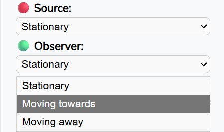
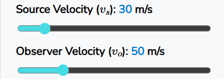

Simulasi ini membantu Anda memahami prinsip perubahan frekuensi akibat gerakan relatif antara sumber bunyi dan pendengar. Gunakan simulasi ini untuk mengeksplorasi konsep dasar Efek Doppler dengan pendekatan visual dan audio.
Disclaimers:
This simulation focuses solely on concept visualization, so the positions and distances are not to scale and do not represent actual physical scales (arbitrary).
The visualization in this simulation is from a third-person perspective (an outside observer). However, the audio frequency presented corresponds to the observer’s perspective.
The audio frequencies presented and displayed in this simulation are calculated according to the Doppler Effect equation and have been validated using the Phyphox app.
The lower frequency limit in this simulation is 100 Hz, because lower frequencies may be less perceptible to the human ear.
The upper frequency limit in this simulation is 400 Hz, to ensure user comfort (frequencies that are too high may cause discomfort).
For the best experience, it is highly recommended to run this simulation on a laptop or device with a minimum screen resolution of 1280×720 pixels (using devices with smaller screens may cause parts of the simulation to be cut off or displayed improperly).
Doppler Effect Simulation Guide
Before starting the simulation, select the conditions of the source and the observer by clicking the dropdown menu, then choose the desired condition (stationary/moving towards/moving away).

Set the source/observer velocity by sliding the velocity slider left or right (the velocity slider will automatically be disabled when source/observer set to stationary).

Set the source frequency by sliding the frequency slider left or right
Press the ▶ (play) button to start the simulation. The wave visualization and audio frequency will appear.
Press the ⏸ (pause) button to pause the simulation. The movements of the source, observer, and waves will be paused, and the audio will be muted.
Press the üîá/üîä button to mute/unmute the audio.
Press the ⏹ (stop) button to stop the simulation (the source and observer will return to their initial positions, but the velocity and frequency values will remain unchanged)
Press the ↻ (reset) button to completely reset the simulation.